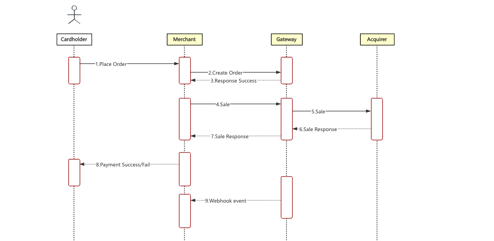
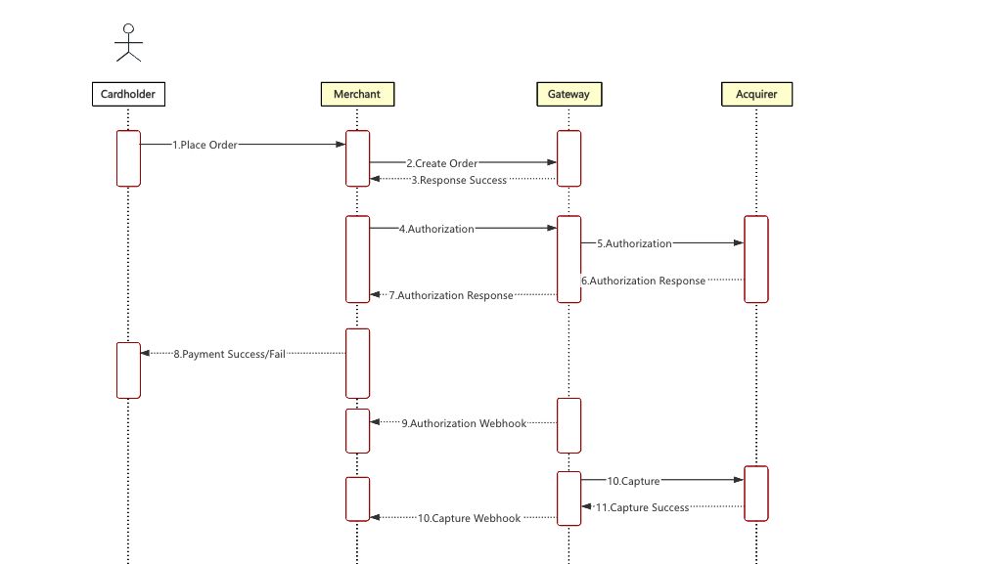
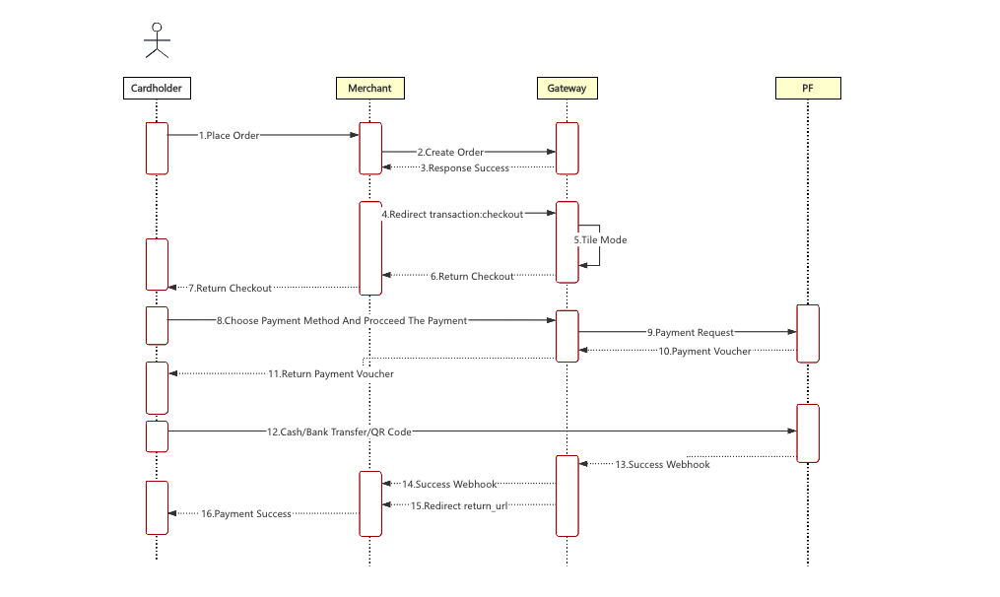

Fintech Payment Online 支付 Card Pay（Online）
卡支付
Fintech Payment Online支付接口文檔
| 時間 | 版本 | 修改內容 |
|---|---|---|
| 2025-12-19 | 1.0 | 初稿 |
| 2026-07-09 | 1.1 | 更新簽名規則（新增 items 巢狀欄位的 canonical JSON 簽名規則）；字段 client_ip 改為 ip_address；錯誤示例 mch_id 修正為 client_id；UnionPay 服務名去掉 .master；卡信息欄位必填條件改為 provide_type=card；服務名統一為 sinopay.online |
1引言
1.1文檔概述
1.2閱讀對象
供商戶平臺服務方技術或業務人員參考和查詢。
2方案概述
2.1 業務實現流程
接口調用時序：
下單接口 API、支付通知接口API和查詢訂單API等都涉及簽名過程，調用都必須在商戶伺服器端完成。 時序圖如下： 下單-支付流程

下單-授權流程

下單-收銀臺流程

3數據格式
3.1 提交數據
採用 HTTPS 標準的 POST 協議， 為了保證接收方接收數據正確,傳輸數據必須簽名。
{
"service":"pay.master.sinopay.online",
"order_no":"00f78e479fe74a11a73be0feb9999749",
"body":"測試Fintech PaymentOnline支付",
"amount":1.0,
"limit_credit_pay":"0",
"callback_url":"http://localhost/pay/result.html",
"notify_url":"http://localhost/pay/notify",
"ip_address":"127.0.0.1",
"attach":"",
"client_id":"1002",
"store_id":"1001002",
"nonce_str":"ptf3tyjv",
"sign":"64950ED7B13489114C671EFD24C45AC3",
"lang":"en_US"
}
3.2 返回結果數據格式
正確返回：
{
"message":"SUCCESS",
"order_no":"00f78e479fe74a11a73be0feb9999749",
"transaction_id":"FTP202012181649370001",
"submit_time":"20201218164937",
"nonce_str":"o66w9pft",
"sign":"3F6C05280C90E5BB1330524FD61C6121"
}
錯誤返回：
{
"message":"Missing Client ID",
JSON"errors":[
{
"field":"client_id",
"message":"Missing Client ID",
"code":"MISSING_FIELD"
}
]
}
message返回非SUCCESS時表示接口調用出錯。
4數字簽名
本接口的簽名規則遵循平臺統一的數字簽名規範，包含基本鍵值場景與含 items 等巢狀欄位場景的簽名規則、MD5 演算法及多語言代碼示例。請參閱數字簽名。
4.1 請求頭說明
請求參數：
| 欄位名 | 變數名 | 必填 | 類型 | 說明 |
|---|---|---|---|---|
| 內容類型 | Content-Type | 是 | String(32) | 值：application/json，請求內容類別型 |
5 接口描述
5.1 下單接口
5.1.1 業務功能
初始化下單請求， 該請求通過不同的支付方式可以選擇不同的流程（如直接支付、授權、收銀臺支付）
5.1.2 交互模式
請求：後臺同步請求模式
返回結果+通知： 後臺請求交互模式+後臺通知交互模式
5.1.3 請求參數列表
請求 url：https://api.fintechpaymenthub.com/openapi/v1/pay
通過 POST JSON 內容體進行請求接口
| 欄位名 | 變數名 | 必填 | 類型 | 說明 |
|---|---|---|---|---|
| 接口類型 | service | 是 | String(40) | 固定選擇其中一項：pay.master.sinopay.online（Mastercard支付） pay.visa.sinopay.online（Visa支付） pay.unionpay.sinopay.online（UnionPay支付） |
| 客戶端ID | client_id | 是 | String(32) | 商戶客戶端ID |
| 門店ID | store_id | 是 | String(50) | 門店ID |
| 商戶訂單號 | order_no | 是 | String(32) | 商戶系統內部的訂單號 32 個字元內、 可包含字母 確保在商戶系統唯一 |
| 商品描述 | body | 是 | String(127) | 商品描述資訊 |
| 金額 | amount | 是 | String(15) | 訂單總金額（必須大於 0），單位為元。 |
| 通知地址 | notify_url | 是 | String(255) | 接收平臺通知的 URL，需給絕對路徑， 255 字符內 格 式如:http://wap.tenpay.com/tenpay.asp， 確保平臺能通過互聯網訪問該地址 |
| 終端IP | ip_address | 是 | String(16) | 訂單生成的機器 IP |
| 附加信息 | attach | 否 | String(127) | 商戶附加信息，可做擴展參數 |
| 回調地址 | callback_url | 否 | String(255) | 交易支付完成返回商戶指定的頁面，需給絕對路徑，255 字元以內，確保平臺能通過互聯網訪問該地址 |
| 隨機字串 | nonce_str | 是 | String(32) | 隨機字串，不長於 32 位，每次提交需傳不同的值 |
| 簽名 | sign | 是 | String(32) | 詳見第 4 章 “簽名規則” |
| 語言 | lang | 否 | String(32) | 語言 |
| 支付類型 | provide_type | 是 | String(32) | 支付類型可選[card：卡支付] |
| 交易類型 | transaction_type | 是 | String(32) | 交易類型[card:支付、apm:授權、checkout:收銀檯支付] |
| 幣種 | currency | 是 | String(32) | 幣種 |
| 地址 | shop_address | 是 | String(32) | 地址（交易來源網址或商城地址） |
| 收貨地址1 | address1 | 是 | String(32) | 收貨地址1 |
| 收貨地址2 | address2 | 是 | String(32) | 收貨地址2 |
| 城市 | city | 是 | String(32) | 城市 |
| 地區 | state | 是 | String(32) | 地區 |
| 郵編 | zip_code | 是 | String(32) | 郵編 |
| 國家 | country | 是 | String(3) | 國家（參考輔料編碼） |
| 姓氏 | first_name | 是 | String(32) | 姓氏 |
| 名稱 | last_name | 是 | String(32) | 名稱 |
| 電話 | phone | 是 | String(32) | 電話 |
| 郵箱 | 是 | String(128) | 郵箱 | |
| 卡號 | pan | 否 | String(20) | 卡號，儅provide_type=card時必傳 |
| cvv | cvv | 否 | String(4) | cvv,儅provide_type=card時必傳 |
| 卡過期年 | expiry_year | 否 | String(4) | 卡過期年（例如2026）,儅provide_type=card時必傳 |
| 卡過期月 | expiry_month | 否 | String(2) | 卡過期月（例如12）,儅provide_type=card時必傳 |
| 商品信息 | items | 是 | List | 商品信息 |
| 商品名稱 | items.description | 是 | String(255) | 商品名稱 |
| 商品數量 | items.quantity | 是 | String(9) | 商品數量 |
| 商品單價 | items.unit_price | 是 | String(9) | 商品單價 |
| 支付方式 | payment_method | 否 | String(32） | 支付方式，儅transaction_type為apm時必穿 |
5.1.4 返回結果
數據按 JSON 的格式即時返回
| 欄位名 | 變數名 | 必填 | 類型 | 說明 |
|---|---|---|---|---|
| 商戶訂單號 | order_no | 是 | String(32） | 商戶生成的訂單號 |
| FTP訂單號 | transaction_id | 是 | String(26） | FTP生成的訂單號 |
| 提交時間 | submit_time | 是 | String(50） | 格式為 yyyyMMddhhmmss |
| 支付鏈接 | payUrl | 否 | String | 支付鏈接,如果是收銀檯類型的支付會返回對應的支付鏈接 |
| 結果信息 | message | 是 | String(500) | 描述查詢結果，SUCCESS表示成功，否則返回其他錯誤信息 |
| 隨機字串 | nonce_str | 是 | String(32) | 隨機字串，不長於 32 位 |
| 簽名 | sign | 是 | String(32) | 詳見第 4 章 “簽名規則” |
5.1.5測試用例
提供了測試用例方便調用
發起提交的數據：
| Example |
|---|
| { "client_id": "16324774461291xz", "store_id": "HKG-5999-001-001-13579111-001", "order_no": "TALWAPO2025121925542412", "body": "Fintech Payment支付測試商品", "amount": "6", "payment_inst": "ALIPAYHK", "order_type": "CAT", "service": "pay.master.sinopay.online", "notify_url": "https://ftpdev.doocom.cn/pay-demo/alipay-web-notify/notify", "ip_address": "61.144.175.64", "nonce_str": "3A9C3422630DEDE155740EBD769DAE26", "sign": "A7DE93C04BB1AE0A50ACA76DA13DFAD5", "provide_type": "card", "transaction_type": "apm", "currency": "USD", "shop_address": "www.test.com", "address1": "123 Main Street", "address2": "Suite 300", "city": "HK", "state": "HKG", "zip_code" : "200111", "country": "HKG", "first_name": "murphy", "last_name": "loren", "phone": "8615621531201", "email": "21345@qq.com", "attach": "test", "pan": "5346930100125624", "cvv": "123", "expiry_year": "2026", "expiry_month": "12", "items": [ { "description": "Mint (piece)", "quantity": "1", "unit_price": "6" } ] } |
成功返回的數據：
| Example |
|---|
| { "message": "SUCCESS", "pay_url": "https://oper.next-apis.com/service-openApi/hosted/checkout/v4/uY099tP5MjAyNTEyMTkyMDAxOTU1NDk5MzExMTQ5MDU2hQR6n797", "order_no": "TALWAPO20251219255424570", "transaction_id": "FTP202512191759200001", "nonce_str": "04iilufm", "sign": "E7FA9D92C6CDE96FB3972A8F791721D0" } |
5.2 訂單查詢接口
5.2.1 業務功能
根據商戶訂單號或者FTP訂單號查詢平臺的具體訂單資訊。
5.2.2 交互模式
後臺系統調用交互模式
5.2.3 請求參數列表
請求 url：https://api.fintechpaymenthub.com/openapi/v1/query 通過 POST JSON 內容體進行請求
| 欄位名 | 變數名 | 必填 | 類型 | 說明 |
|---|---|---|---|---|
| 接口類型 | service | 是 | String(40) | 固定選擇其中一項：pay.master.sinopay.online（Mastercard支付） pay.visa.sinopay.online（Visa支付） pay.unionpay.sinopay.online（UnionPay支付） |
| 客戶端ID | client_id | 是 | String(32) | 商戶客戶端ID |
| 門店ID | store_id | 是 | String(50) | 門店ID |
| 商戶訂單號 | order_no | 否 | String(32） | 商戶生成的訂單號（order_no 和 transaction_id 至少一個必填，同時存在時 transaction_id 優先） |
| FTP訂單號 | transaction_id | 否 | String(26） | FTP訂單號（order_no 和 transaction_id 至少一個必填，同時存在時 transaction_id 優先） |
| 隨機字串 | nonce_str | 是 | String(32) | 隨機字串，不長於 32 位 |
| 簽名 | sign | 是 | String(32) | 詳見第 4 章 “簽名規則” |
| 語言 | lang | 否 | String(32) | 語言 |
5.2.4 返回結果
數據按 JSON 的格式即時返回
| 欄位名 | 變數名 | 必填 | 類型 | 說明 | |
|---|---|---|---|---|---|
| FTP訂單號 | transaction_id | 是 | String(26) | FTP生成的訂單號 | |
| 商戶訂單號 | order_no | 是 | String(32) | 商戶生成的訂單號 | |
| 門店ID | store_id | 是 | String(50) | 門店ID | |
| 提交時間 | submit_time | 是 | String(32) | 格式為 yyyyMMddhhmmss | |
| 交易狀態 | trade_state | 是 | String(32) | SUCCESS—支付成功 NOTPAY—待付款 PROCESSING—處理中 REFUND—退款 CANCEL—關閉 FAIL—失敗 | |
| 金額 | amount | 是 | Double | 訂單總金額（必須大於 0），單位為人民幣為元。如訂單總金額為 1 元，amount 為 1。 | |
| 幣種 | currency | 是 | String(3) | 3 位元 ISO 貨幣代碼，大寫字母，人民幣為 CNY。 | |
| 付款方 | payer | 是 | String(50) | 付款方 | |
| 支付完成時間 | pay_finish_time | 是 | String(32) | 支付完成時間，格式為 yyyyMMddhhmmss， 如2009 年 12 月 27 日 9 點 10 分 10 秒錶示為20091227091010。 時區為 GMT+8 beijing。 | |
| 商品描述 | body | 是 | String(127) | 商品描述資訊 | |
| 退款金額 | refund_amount | 是 | Double | 退款金額，單位為人民幣為元。如訂單總金額為 1 元，amount 為 1。 | |
| 第三方商戶號 | out_transaction_id | 是 | String(32) | 對應微信交易記錄賬單詳情中的交易號 | |
| 附加信息 | attach | 否 | String(127) | 商家數據包，原樣返回 | |
| 結果信息 | message | 是 | String(500) | 描述查詢結果，SUCCESS表示成功，否則返回其他錯誤信息 | 描述查詢結果，SUCCESS表示成功，否則返回其他錯誤信息 |
| 隨機字串 | nonce_str | 是 | String(32) | 隨機字串，不長於 32 位 | |
| 簽名 | sign | 是 | String(32) | 詳見第 4 章 “簽名規則” |
5.2.5測試用例
提供了測試用例方便調用
發起提交的數據：
| Example |
|---|
| { "service":"pay.master.sinopay.online", "order_no":"", "transaction_id":"FTP202012181649370001", "client_id":"1002", "store_id":"1001002", "nonce_str":"ha2n1pje", "sign":"955BEFA725040AA893CA2F852AD09B71", "lang":"en_US" } |
成功返回的數據：
| Example |
|---|
| { "message":"SUCCESS", "transaction_id":"FTP202012181649370001", "order_no":"00f78e479fe74a11a73be0feb9999749", "store_id":"1001002", "submit_time":"20201218164937", "trade_state":"SUCCESS", "amount":1, "currency":"HKD", "payer":"oAOWGsyf4fjHHMzS_wAzfEzGoyWQ", "pay_finish_time":"20201110111036", "body":"測試Fintech Paymentonline支付", "refund_amount":0, "nonce_str":"dccxwj0e", "sign":"2E4F0838DE0110BB54B67EDAF4B65213", "out_transaction_id":"127500000158202011109001661238", "attach":"sid=1" } |
5.3 退款接口接口
5.3.1 業務功能
商戶針對某一個已經成功支付的訂單發起退款， 操作結果在同一會話中同步返回。
一、 退款方式
目前只支持原路返回退款。
說明：退款到銀行卡則是非即時的，每個銀行的處理速度不同，一般發起退款後 1-3 個工作日內到賬。總退款金額不能超過用戶實際支付金額(現金券金額不能退款)。
二、 退款限制
商戶在退款操作時應該注意退款限制，避免發起不會成功的退款請求，下麵是主要的退款限制：
1. 退款申請單號由商戶生成，所以商戶一定要保證退款申請單的唯一性。商家在退款過程中要特別注意，只有在能確定退款失敗的情況下，才能重新發起另一筆退款。
2. 目前大多數銀行都會支持全額退款和部分退款，但是也有少數銀行不支持全額退款或部分退款，或者不支持退款。在這種情況下，商戶可以與賣家協調。
5.3.2 交互模式
後臺系統調用交互模式
5.3.3 請求參數列表
請求 url：https://api.fintechpaymenthub.com/openapi/v1/refund 通過 POST JSON 內容體進行請求
| 欄位名 | 變數名 | 必填 | 類型 | 說明 |
|---|---|---|---|---|
| 接口類型 | service | 是 | String(40) | 固定選擇其中一項：pay.master.sinopay.online（Mastercard支付） pay.visa.sinopay.online（Visa支付） pay.unionpay.sinopay.online（UnionPay支付） |
| 客戶端ID | client_id | 是 | String(32) | 商戶客戶端ID |
| 門店ID | store_id | 是 | String(50) | 門店ID |
| 商戶訂單號 | order_no | 是 | String(32） | 原商戶生成的訂單號 |
| FTP訂單號 | transaction_id | 是 | String(26） | 原訂單FTP生成的訂單號 |
| 商戶退款單號 | out_refund_no | 是 | String(32） | 商戶退款單號，32 個字元內、可包含字母,確保在商戶系統唯一。同個退款單號多次請求， 平臺當一個單處理，只會退一次款。如果出現退款不成功，請採用原退款單號重新發起，避免出現重複退款。 |
| 備註 | remarks | 否 | String(255) | 退款備註 |
| 退款金額 | refund_fee | 是 | String(15) | 退款總金額,單位為元,可以做部分退款 |
| 隨機字串 | nonce_str | 是 | String(32) | 隨機字串，不長於 32 位 |
| 簽名 | sign | 是 | String(32) | 詳見第 4 章 “簽名規則” |
| 語言 | lang | 否 | String(32) | 語言 |
5.3.4 返回結果
數據按 JSON 的格式即時返回
| 欄位名 | 變數名 | 必填 | 類型 | 說明 | |
|---|---|---|---|---|---|
| FTP訂單號 | transaction_id | 是 | String(26) | FTP生成的訂單號 | |
| 商戶訂單號 | order_no | 是 | String(32) | 商戶生成的訂單號 | |
| 商戶退款單號 | out_refund_no | 是 | String(32） | 商戶退款單號，32 個字元內、可包含字母,確保在商戶系統唯一。同個退款單號多次請求， 平臺當一個單處理，只會退一次款。如果出現退款不成功，請採用原退款單號重新發起，避免出現重複退款。 | |
| 提交時間 | submit_time | 是 | String(32) | 格式為 yyyyMMddhhmmss | |
| 訂單金額 | amount | 是 | Double | 訂單金額,單位為元 | |
| 退款金額 | refund_amount | 是 | Double | 退款金額,單位為元 | |
| 結果信息 | message | 是 | String(500) | 描述查詢結果，SUCCESS表示成功，否則返回其他錯誤信息 | 描述查詢結果，SUCCESS表示成功，否則返回其他錯誤信息 |
| 隨機字串 | nonce_str | 是 | String(32) | 隨機字串，不長於 32 位 | |
| 簽名 | sign | 是 | String(32) | 詳見第 4 章 “簽名規則” |
5.3.5測試用例
提供了測試用例方便調用
發起提交的數據：
| Example |
|---|
| { "client_id": "16324774461291xz", "store_id": "HKG-5999-001-001-13579111-001", "order_no": "TALWAPO20251219255424570", "out_refund_no": "TALWAPR20251219180649751", "remarks": "Fintech PaymentOnline退款測試", "refund_fee": "6", "service": "pay.master.sinopay.online", "nonce_str": "F2ABD3CE886BA93395ACE9AB0F4603F0", "sign": "CB4B66A8F65EB656CFC7D2386F8A5A22" } |
成功返回的數據：
| Example |
|---|
| { "message":"SUCCESS", "order_no":"00f78e479fe74a11a73be0feb9999749", "transaction_id":"FTP202012181649370001", "out_refund_no":"T1608281521535", "submit_time":"20201218165201", "amount":1, "refund_amount":1, "nonce_str":"t2uycm0j", "sign":"D41D8CD98F00B204E9800998ECF8427E", "lang":"en_US" } |
5.4退款查詢接口
5.4.1 業務功能
提交退款申請後， 通過調用該接口查詢退款狀態。
5.4.2 交互模式
後臺系統調用交互模式
5.4.3 請求參數列表
請求 url：https://api.fintechpaymenthub.com/openapi/v1/refundQuery 通過 POST JSON 內容體進行請求
| 欄位名 | 變數名 | 必填 | 類型 | 說明 |
|---|---|---|---|---|
| 接口類型 | service | 是 | String(40) | 固定選擇其中一項：pay.master.sinopay.online（Mastercard支付） pay.visa.sinopay.online（Visa支付） pay.unionpay.sinopay.online（UnionPay支付） |
| 客戶端ID | client_id | 是 | String(32) | 商戶客戶端ID |
| 門店ID | store_id | 是 | String(50) | 門店ID |
| 商戶訂單號 | order_no | 否 | String(32） | 退款返回的商戶訂單號，也是訂單的商戶訂單號 |
| FTP訂單號 | transaction_id | 否 | String(26） | 退款返回的FTP訂單號 |
| 商戶退款單號 | out_refund_no | 否 | String(32） | 商戶生成的退款單號 |
| 第三方退款單號 | to_order_sn | 否 | String(255) | 第三方退款單號，如果同時存在優先順序為： to_order_sn > out_refund_no > transaction_id > order_no |
| 隨機字串 | nonce_str | 是 | String(32) | 隨機字串，不長於 32 位 |
| 簽名 | sign | 是 | String(32) | 詳見第 4 章 “簽名規則” |
| 語言 | lang | 否 | String(32) | 語言 |
5.4.4 返回結果
數據按 JSON 的格式即時返回
| 欄位名 | 變數名 | 必填 | 類型 | 說明 |
|---|---|---|---|---|
| FTP訂單號 | transaction_id | 是 | String(26) | 對應訂單的FTP訂單號 |
| 商戶訂單號 | order_no | 是 | String(32) | 對應訂單的商戶訂單號 |
| 退款金額 | total_fee | 是 | Double | 退款總金額,單位為元 |
| 退款筆數 | refund_count | 是 | Int | 退款記錄數 |
| 商戶退款單號 | out_refund_no_n | 是 | String(32） | 商戶退款單號， 32 個字元內、可包含字母,確保在商戶系統唯一。同個退款單號多次請求， 平臺當一個單處理，只會退一次款。 如果出現退款不成功，請採用原退款單號重新發起，避免出現重複退款。 第一筆退款返回字段：out_refund_no_1， 第二筆退款返回字段：out_refund_no_2， 以此類推。 |
| FTP退款單號 | refund_id_n | 是 | String(32） | FTP退款單號 |
| 第三方退款單號 | to_order_sn_n | 是 | String(32） | 第三方退款單號 |
| 退款金額 | refund_amount_n | 是 | Double | 退款金額,單位為元 |
| 退款時間 | refund_time_n | 是 | String(14) | yyyyMMddHHmmss |
| 退款狀態 | refund_status_n | 是 | String(16) | 退款狀態： SUCCESS—退款成功 FAIL—退款失敗 PROCESSING—退款處理中 NOTSURE—未確定，需要商戶原退款單號重新發起CHANGE—轉入代發，退款到銀行發現用戶銀行賬戶作廢或者被凍結，導致原路退款銀行卡失敗，資金迴流到商戶的現金帳號，需要商戶人工幹預，通過線下或者平臺轉賬的方式進行退款。 |
| 結果信息 | message | 是 | String(500) | 描述查詢結果，SUCCESS表示成功，否則返回其他錯誤信息 |
| 隨機字串 | nonce_str | 是 | String(32) | 隨機字串，不長於 32 位 |
| 簽名 | sign | 是 | String(32) | 詳見第 4 章 “簽名規則” |
5.4.5測試用例
提供了測試用例方便調用
發起提交的數據：
| Example |
|---|
| { "service":"pay.master.sinopay.online", "client_id":"1001", "store_id":"1001001", "transaction_id":"FTP202012181649370001", "order_no":"", "out_refund_no":"", "to_order_sn":"", "nonce_str":"bhdswd00", "sign":"EDD59501B4E5FA849E352E23668480C4", "callback_url":"http://localhost/pay/result.html" } |
成功返回的數據：
| Example |
|---|
| { "message":"SUCCESS", "transaction_id":"FTP202012181624320001", "order_no":"TALWEBO20210514114611632", "total_fee":1, "refund_count":1, "nonce_str":"401n5buh", "out_refund_no_1":"T9802e9e18ff340548357bfba730d407", "refund_id_1":"FTP202105141152540001", "refund_amount_1":1, "to_order_sn_1":"121500000214202105141132335702", "refund_time_1":"20210514115254", "refund_status_1":"SUCCESS", "sign":"7A5CA8D8BD0F4E9F78641F9433FD3A4D", "lang":"en_US" } |
5.5 支付通知接口
5.5.1 業務功能
支付完成後系統會通知相關數據到下單時填寫的notify_url，通知URL是支付接口中提交的參數 notify_url，支付完成後，平臺會把相關支付和用戶資訊發送到該URL，
商戶需要接收處理資訊。
對後臺通知交互時，如果平臺收到商戶的應答不是純字串success或超過5秒後返回時，平臺認為通知失敗，平臺會通過一定的策略（通知頻率為 0/15/15/30/180/1800/1800/1800/1800/3600，單位：秒）間接性重新發起通知，盡可能提高通知的成功率，但不保證通知最終能成功。
由於存在重新發送後臺通知的情況，因此同樣的通知可能會多次發送給商戶系統。商戶系統必須能夠正確處理重複的通知。
推薦的做法是，當收到通知進行處理時，首先檢查對應業務數據的狀態，判斷該通知是否已經處理過，如果沒有處理過再進行處理，如果處理過直接返回結果成功。在對業務數據進行狀態檢查和處理之前，要採用數據鎖進行併發控制，以避免函數重入造成的數據混亂。
特別注意：商戶後臺接收到通知參數後，要對接收到通知參數裏的訂單號order_no 和訂單金額amount和自身業務系統的訂單和金額做校驗，校驗一致後才更新資料庫訂單狀態後臺通知通過請求中的 notify_url 進行，post 方式返回數據流，具體資訊是 xml 格式的串（商戶方在處理時要注意）
5.5.2 交互模式
後臺通知模式
5.5.3 返回參數列表
數據按 JSON 的格式即時返回
| 欄位名 | 變數名 | 必填 | 類型 | 說明 | |
|---|---|---|---|---|---|
| FTP訂單號 | transaction_id | 是 | String(26) | FTP生成的訂單號 | |
| 商戶訂單號 | order_no | 是 | String(32) | 商戶生成的訂單號 | |
| 第三方商戶號 | out_transaction_id | 是 | String(32) | 對應微信交易記錄賬單詳情中的交易號 | |
| 門店ID | store_id | 是 | String(50) | 門店ID | |
| 提交時間 | submit_time | 是 | String(32) | 格式為 yyyyMMddhhmmss | |
| 交易狀態 | trade_state | 是 | String(32) | SUCCESS—支付成功 PROCESSING—處理中 CANCEL—關閉 FAIL—失敗 | |
| 訂單金額 | amount | 是 | Double | 訂單總金額（必須大於 0），單位為人民幣為元。如訂單總金額為 1 元，amount 為 1。 | |
| 訂單幣種 | currency | 是 | String(3) | 3 位元 ISO 貨幣代碼，大寫字母，人民幣為 CNY。 | |
| 付款方 | payer | 是 | String(50) | 付款方 | |
| 支付完成時間 | pay_finish_time | 是 | String(32) | 支付完成時間，格式為 yyyyMMddhhmmss， 如2009 年 12 月 27 日 9 點 10 分 10 秒錶示為20091227091010。 時區為 GMT+8 beijing。 | |
| 附加信息 | attach | 否 | String(127) | 商家數據包，原樣返回 | |
| 交易類型 | trade_type | 是 | String(32) | 固定：pay.master.sinopay.online | |
| 支付幣種 | pay_currency | 否 | String(32) | 支付幣種，需要根據實際情況返回 | |
| 結果信息 | message | 是 | String(500) | 描述查詢結果，SUCCESS表示成功，否則返回其他錯誤信息 | 描述查詢結果，SUCCESS表示成功，否則返回其他錯誤信息 |
| 隨機字串 | nonce_str | 是 | String(32) | 隨機字串，不長於 32 位 | |
| 簽名 | sign | 是 | String(32) | 詳見第 4 章 “簽名規則” |
5.5.4測試用例
提供了測試用例方便調用
發起提交的數據：
| Example |
|---|
| { "message":"SUCCESS", "order_no":"432259d302bc486d898d139431869e6b", "transaction_id":"FTP202012181653320001", "out_transaction_id":"2020111022001311413118431156", "store_id":"1001002", "submit_time":"20201218165332", "trade_state":"SUCCESS", "amount":1, "currency":"HKD", "payer":"oAOWGsyf4fjHHMzS_wAzfEzGoyWQ", "pay_finish_time":"20201110111036", "nonce_str":"g1iwi4fg", "trade_type":"pay.master.sinopay.online", "sign":"9983066974A7779BD16505AE7D6752C5", "pay_currency":"HKD" } |
6 錯誤碼說明
| 錯誤碼 | 說明 |
|---|---|
| MISSING_FIELD | 字段未傳入 |
| INVALID_FIELD | 字段校驗錯誤 |
| NO_EXISTS | 數據不存在 |
| OTHER | 其他錯誤 |
| INVALID_SCOPE | 數據超出範圍 |
| INVALID_LENGTH | 數據長度超過限制 |
| INCORRECT_SIGNATURE | 無效簽名 |
| EXPIRED_ORDER | 訂單已過期 |
| PAY_GATEWAY_FAIL | 支付網關異常 |
| UNKNOWN_ERROR | 未知錯誤 |
| XML_FORMAT_ERROR | XML格式錯誤 |
| REQUIRE_POST_METHOD | 請使用post方法 |
| ACCESS_DENIED | 拒絕訪問 |
| POST_DATA_EMPTY | post數據爲空 |
| NOT_UTF8 | 編碼格式錯誤 |
| ORDER_CLOSED | 訂單已關閉 |
| NO_AUTH | 權限不足 |
| LACK_PARAMS | 缺少參數 |
| INVALID_STATUS | 非法狀態 |
| INVALID_SERVICE | 非法接口類型 |
| SN_IS_EXISTS | 編號已存在 |
| NOTIFY_FAIL | 通知異常 |
| URL_FORMAT_ERROR | URL格式不正確 |
| IP_FORMAT_ERROR | IP格式不正確 |
| DATE_FORMAT_ERROR | 日期格式不正確 |
| TRADE_NOT_EXIST | 交易不存在 |
| TRADE_HAS_SUCCESS | 交易已被支付 |
| TRADE_FAILED | 交易失敗 |
| TRADE_TIMEOUT | 交易超時 |
| INVALID_ORDER_STATUS | 無效的訂單狀態 |
| REVERSE_FAILED | 撤銷授權失敗 |
| DEDUCTIONS_FAILED | 扣款失敗 |
| REFUND_FAILED | 扣款失敗 |
| INVALID_CLIENT_ID | 無效客戶端ID |
| INVALID_STORE_ID | 無效門店ID |
| INVALID_AMOUNT | 交易金額不正確 |
| INVALID_REFUND_FEE | 退款金額不正確 |
| VALID_FLOW_FAIL | 請求過於頻繁 |
| UNSUPPORTED_SERVICE | 不支持的接口類型 |
| DATA_NOT_EXIST | 查詢的數據不存在 |
| ACCOUNT_LOCKED | 商戶或門店的賬號被鎖定 |
附錄
附錄、ISO國家/地區表
| 國家中文名稱 | 國家英文名稱 | 3位字母代碼 |
|---|---|---|
| 中國 | China | CHN |
| 蒙古 | Mongolia | MNG |
| 朝鮮 | North Korea | PRK |
| 韓國 | South Korea | KOR |
| 日本 | Japan | JPN |
| 菲律賓 | Philippines | PHL |
| 越南 | Vietnam | VNM |
| 老撾 | Laos | LAO |
| 柬埔寨 | Cambodia | KHM |
| 緬甸 | Myanmar | MMR |
| 泰國 | Thailand | THA |
| 馬來西亞 | Malaysia | MYS |
| 文萊 | Brunei Darussalam | BRN |
| 新加坡 | Singapore | SGP |
| 印度尼西亞 | Indonesia | IDN |
| 東帝汶 | east Timor | TLS |
| 尼泊爾 | Nepal | NPL |
| 不丹 | Bhutan | BTN |
| 孟加拉國 | Bengal | BGD |
| 印度 | India | IND |
| 巴基斯坦 | Pakistan | PAK |
| 斯里蘭卡 | Sri Lanka | LKA |
| 馬爾代夫 | Maldives | MDV |
| 哈薩克斯坦 | Kazakhstan | KAZ |
| 吉爾吉斯斯坦 | Kyrgyzstan | KGZ |
| 塔吉克斯坦 | Tajikistan | TJK |
| 烏茲別克斯坦 | Uzbekistan | UZB |
| 土庫曼斯坦 | Turkmenistan | TKM |
| 阿富汗 | Afghanistan | AFG |
| 伊拉克 | Iraq | IRQ |
| 伊朗 | Iran | IRN |
| 敘利亞 | Syria | SYR |
| 約旦 | Jordan | JOR |
| 黎巴嫩 | Lebanon | LBN |
| 以色列 | Israel | ISR |
| 巴勒斯坦 | Palestine | PSE |
| 沙特阿拉伯 | Saudi Arabia | SAU |
| 巴林 | Bahrain | BHR |
| 卡塔爾 | Qatar | QAT |
| 科威特 | Kuwait | KWT |
| 阿拉伯聯合酋長國（阿聯酋） | United Arab Emirates | UAE |
| 阿曼 | Oman | OMN |
| 也門 | Yemen | YEM |
| 格魯吉亞 | Georgia | GEO |
| 亞美尼亞 | Armenia | ARM |
| 阿塞拜疆 | Azerbaijan | AZE |
| 土耳其 | Turkey | TUR |
| 塞浦路斯 | Cyprus | CYP |
| 芬蘭 | Finland | FIN |
| 瑞典 | Sweden | SWE |
| 挪威 | Norway | NOR |
| 冰島 | Iceland | ISL |
| 丹麥 | Danmark | DNK |
| 法羅羣島 | Faroe Islands（丹） | FRO |
| 愛沙尼亞 | Estonia | EST |
| 拉脫維亞 | Latvia | LVA |
| 立陶宛 | Lithuania | LTU |
| 白俄羅斯 | Belarus | BLR |
| 俄羅斯 | Russia | RUS |
| 烏克蘭 | Ukraine | UKR |
| 摩爾多瓦 | Moldova | MDA |
| 波蘭 | Poland | POL |
| 捷克 | Czech | CZE |
| 斯洛伐克 | Slovakia | SVK |
| 匈牙利 | Hungary | HUN |
| 德國 | Germany | DEU |
| 奧地利 | Austria | AUT |
| 瑞士 | Switzerland | CHE |
| 列支敦士登 | Liechtenstein(LIE) | LIE |
| 英國 | Britain | GBR |
| 愛爾蘭 | Ireland | IRL |
| 荷蘭 | Holand | NLD |
| 比利時 | Belgium | BEL |
| 盧森堡 | Luxemburg | LUX |
| 法國 | France | FRA |
| 摩納哥 | Monaco | MCO |
| 羅馬尼亞 | Romania | ROU |
| 保加利亞 | Bulgaria | BGR |
| 塞爾維亞 | Serbia | SRB |
| 馬其頓 | Macedonia | MKD |
| 阿爾巴尼亞 | Albania | ALB |
| 希臘 | Greece | GRC |
| 斯洛文尼亞 | Slovenia | SVN |
| 克羅地亞 | Croatia | HRV |
| 波斯尼亞Bosnia和墨塞哥維那Herzegovina(波黑) | Bosnia | BIH |
| 意大利 | Italy | ITA |
| 梵蒂岡 | Vatican | VAT |
| 聖馬力諾 | San Marino | SMR |
| 馬耳他 | Malta | MLT |
| 西班牙 | Spain | ESP |
| 葡萄牙 | Portugal | PRT |
| 安道爾 | Andorra | AND |
| 埃及 | Egypt | EGY |
| 利比亞 | Libya | LBY |
| 蘇丹 | Sudan | SDN |
| 突尼斯 | Tunis | TUN |
| 阿爾及利亞 | Algeria | DZA |
| 摩洛哥 | Morocco | MAR |
| 埃塞俄比亞 | Ethiopia | ETH |
| 厄立特里亞 | Eritrea | ERI |
| 索馬里 | Somalia | SOM |
| 吉布提 | Djibouti | DJI |
| 肯尼亞 | Kenya | KEN |
| 坦桑尼亞 | Tanzania | TZA |
| 烏干達 | Uganda | UGA |
| 盧旺達 | Rwanda | RWA |
| 布隆迪 | Burundi | BDI |
| 塞舌爾 | Seychelles | SYC |
| 乍得 | Chad | TCD |
| 中非 | Central Africa | CAF |
| 喀麥隆 | Cameroon | CMR |
| 赤道幾內亞 | Equatorial Guinea | GNQ |
| 加蓬 | Gabon | GAB |
| 剛果共和國 | Republic of Congo | COG |
| 剛果民主共和國 | Democratic Republic of Congo | COD |
| 聖多美及普林西比 | Sao Tome and Principe | STP |
| 毛里塔尼亞 | Mauritania | MRT |
| 西撒哈拉 | Western Sahara | ESH |
| 塞內加爾 | Senegal | SEN |
| 岡比亞 | Gambian | GMB |
| 馬裏 | Mali | MLI |
| 布基納法索 | Burkina Faso | BFA |
| 幾內亞 | Guinea | GIN |
| 幾內亞比紹 | Guinea-Bissau | GNB |
| 佛得角 | Cape-Verde | CPV |
| 塞拉利昂 | Sierra Leone | SLE |
| 利比里亞 | Liberia | LBR |
| 科特迪瓦 | Cote d'Ivoire | CIV |
| 加納 | Ghana | GHA |
| 多哥 | Togo | TGO |
| 貝寧 | Benin | BEN |
| 尼日爾 | Niger | NER |
| 贊比亞 | Zambia | ZMB |
| 安哥拉 | Angola | AGO |
| 津巴布韋 | Zimbabwe | ZWE |
| 馬拉維 | Malawi | MWI |
| 莫桑比克 | Mozambique | MOZ |
| 博茨瓦納 | Botswana | BWA |
| 納米比亞 | Namibia | NAM |
| 南非 | South Africa | ZAF |
| 斯威士蘭 | Swaziland | SWZ |
| 萊索托 | Lesotho | LSO |
| 馬達加斯加 | Madagascan | MDG |
| 科摩羅 | Comorin | COM |
| 毛里求斯 | Mauritius | MUS |
| 聖赫勒拿 | Saint Helena（英） | SHN |
| 澳大利亞 | Australia | AUS |
| 新西蘭 | New Zealand | NZL |
| 巴布亞新幾內亞 | Guinea | PNG |
| 所羅門羣島 | Archipelago | SLB |
| 瓦努阿圖 | Vanuatu | VUT |
| 密克羅尼西亞 | Micronesia | FSM |
| 馬紹爾羣島 | Marshall Islands | MHL |
| 帕勞 | Palau | PLW |
| 瑙魯 | Nauru | NRU |
| 基里巴斯 | Kiribati | KIR |
| 圖瓦盧 | Tuvalu TV | TUV |
| 薩摩亞 | Samoa | WSM |
| 斐濟羣島 | Fiji Islands | FJI |
| 湯加 | Tonga | TON |
| 庫克羣島 | Cook Islands（新） | COK |
| 關島 | Guam（美） | GUM |
| 新喀里多尼亞 | New Caledonia（法） | NCL |
| 法屬玻利尼西亞 | French Polynesia | PYF |
| 皮特凱恩羣島 | Pitcairn Island | PCN |
| 瓦利斯與富圖納 | Wallis/Futuna | WLF |
| 紐埃 | Niue | NIU |
| 托克勞 | Tokelau | TKL |
| 美屬薩摩亞 | American Samoa | ASM |
| 北马里亞納 | Mariana（美） | MNP |
| 加拿大 | Canada | CAN |
| 美國 | America | USA |
| 墨西哥 | Mexico | MEX |
| 格陵蘭 | Greenland | GRL |
| 危地馬拉 | Guatemala | GTM |
| 伯利茲 | Belize | BLZ |
| 薩爾瓦多 | Salvador | SLV |
| 洪都拉斯 | Honduras | HND |
| 尼加拉瓜 | Nicaragua | NIC |
| 哥斯達黎加 | Costarica(另Costa Rica) | CRI |
| 巴拿馬 | Panama | PAN |
| 巴哈馬 | Bahamas | BHS |
| 古巴 | Cuba | CUB |
| 牙買加 | Jamaica | JAM |
| 海地 | Haiti | HTI |
| 多米尼加共和國 | Dominican Republic | DOM |
| 安提瓜和巴布達 | Antigua and Barbuda | ATG |
| 聖基茨和尼維斯 | Saint Kitts and Nevis | KNA |
| 多米尼克 | Dominica | DMA |
| 聖盧西亞 | Saint Lucia | LCA |
| 聖文森特和格林納丁斯 | Saint Vincent and the Grenadines | VCT |
| 格林納達 | Grenada | GRD |
| 巴巴多斯 | Barbados | BRB |
| 特立尼達和多巴哥 | Trinidad and Tobago | TTO |
| 波多黎各 | Porto Rico（美） | PRI |
| 英屬維爾京羣島 | British Virgin Islands | VGB |
| 美屬維爾京羣島 | Virgin Islands of the United States | VIR |
| 安圭拉 | Anguilla（英） | AIA |
| 蒙特塞拉特 | Montserrat（英） | MSR |
| 瓜德羅普 | Guadeloupe（法） | GLP |
| 馬提尼克 | Martinique | MTQ |
| 阿魯巴 | Aruba | ABW |
| 特克斯和凱科斯羣島 | Turks And Caicos Islands | TCA |
| 開曼羣島 | Cayman Islands | CYM |
| 百慕大 | Bermuda | BMU |
| 哥倫比亞 | Colombia | COL |
| 委內瑞拉 | Venezuela | VEN |
| 圭亞那 | Guyana | GUY |
| 法屬圭亞那 | French Guiana | GUF |
| 蘇里南 | Suriname | SUR |
| 厄瓜多爾 | Ecuador | ECU |
| 祕魯 | Peru | PER |
| 玻利維亞 | Bolivia | BOL |
| 巴西 | Brazil | BRA |
| 智利 | Chile | CHL |
| 阿根廷 | Argentina | ARG |
| 烏拉圭 | Uruguay | URY |
| 巴拉圭 | Paraguay | PRY |